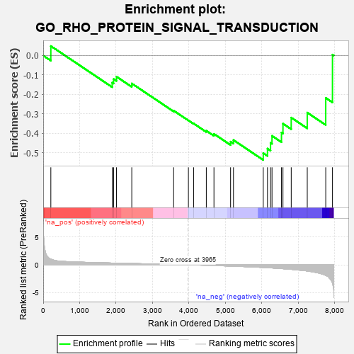

| | | Dataset | 7d |
| Phenotype | NoPhenotypeAvailable |
| Upregulated in class | na_neg |
| GeneSet | GO_RHO_PROTEIN_SIGNAL_TRANSDUCTION |
| Enrichment Score (ES) | -0.53816086 |
| Normalized Enrichment Score (NES) | -1.3625957 |
| Nominal p-value | 0.10027473 |
| FDR q-value | 0.38799316 |
| FWER p-Value | 1.0 |
Table: GSEA Results Summary

Fig 1: Enrichment plot: GO_RHO_PROTEIN_SIGNAL_TRANSDUCTION
Profile of the Running ES Score & Positions of GeneSet Members on the Rank Ordered List
| PROBE | GENE SYMBOL | GENE_TITLE | RANK IN GENE LIST | RANK METRIC SCORE | RUNNING ES | CORE ENRICHMENT | | 1 | RHOU | | | 210 | 1.031 | 0.0487 | No |
| 2 | CUL3 | | | 1893 | 0.321 | -0.1395 | No |
| 3 | HACD3 | | | 1932 | 0.315 | -0.1213 | No |
| 4 | RAF1 | | | 2011 | 0.303 | -0.1090 | No |
| 5 | MET | | | 2430 | 0.240 | -0.1441 | No |
| 6 | GPR18 | | | 3578 | 0.063 | -0.2838 | No |
| 7 | SCAI | | | 3983 | -0.005 | -0.3343 | No |
| 8 | ABL1 | | | 4125 | -0.027 | -0.3501 | No |
| 9 | EPS8 | | | 4474 | -0.088 | -0.3874 | No |
| 10 | LIMK1 | | | 4684 | -0.136 | -0.4038 | No |
| 11 | FLCN | | | 5140 | -0.235 | -0.4439 | No |
| 12 | GPR4 | | | 5219 | -0.250 | -0.4355 | No |
| 13 | RAC1 | | | 6036 | -0.484 | -0.5029 | Yes |
| 14 | ROCK1 | | | 6152 | -0.520 | -0.4795 | Yes |
| 15 | CDC42 | | | 6236 | -0.548 | -0.4500 | Yes |
| 16 | FLOT1 | | | 6276 | -0.564 | -0.4138 | Yes |
| 17 | KANK1 | | | 6536 | -0.678 | -0.3970 | Yes |
| 18 | ROBO1 | | | 6577 | -0.699 | -0.3511 | Yes |
| 19 | NET1 | | | 6803 | -0.816 | -0.3199 | Yes |
| 20 | ABCA1 | | | 7243 | -1.113 | -0.2940 | Yes |
| 21 | P2RY8 | | | 7750 | -1.912 | -0.2184 | Yes |
| 22 | ARRB1 | | | 7935 | -3.377 | 0.0045 | Yes |
Table: GSEA details [plain text format]
Fig 2: GO_RHO_PROTEIN_SIGNAL_TRANSDUCTION: Random ES distribution
Gene set null distribution of ES for GO_RHO_PROTEIN_SIGNAL_TRANSDUCTION